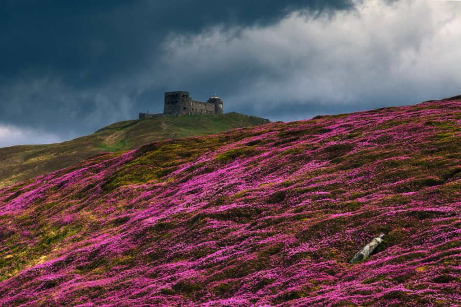
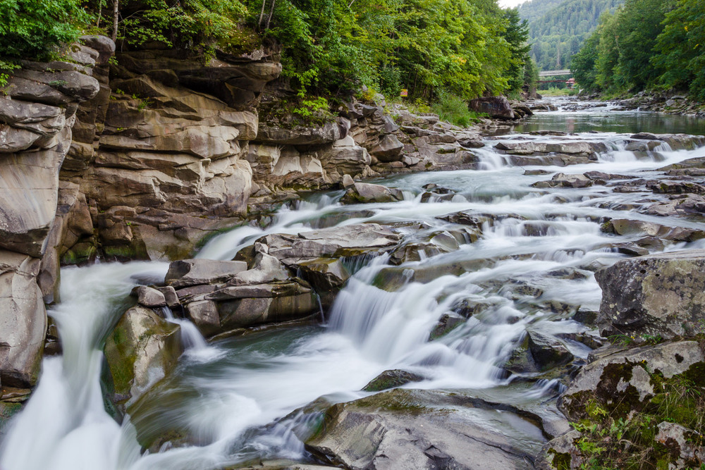
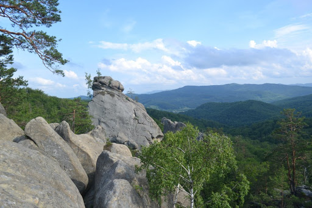
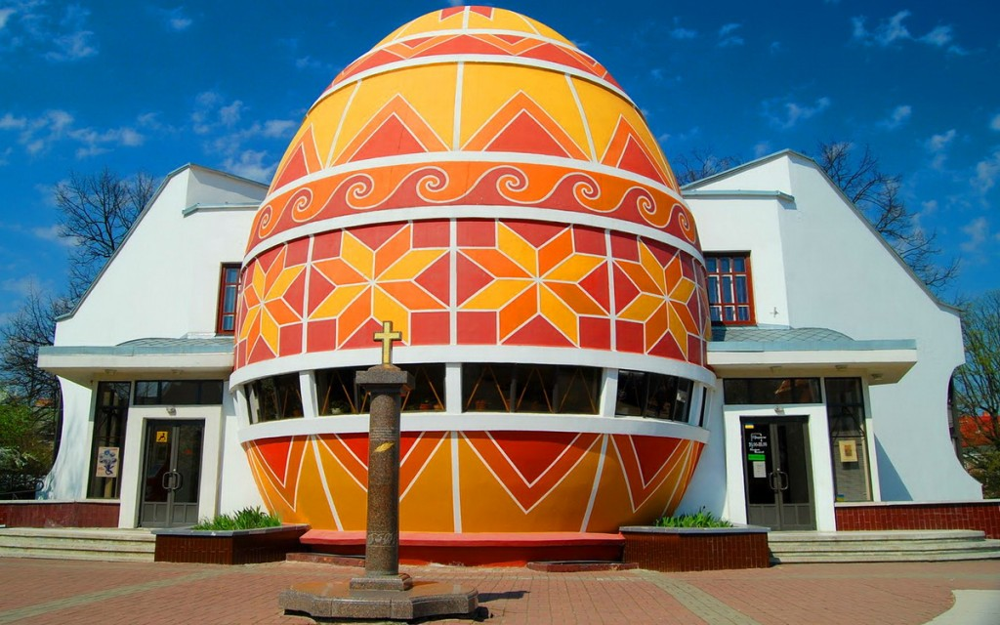

Туристичні місця прикарпаття
1.Обсерваторія на горі Піп Іван Чорногірський

До гірського масиву належить і найвища гора України Говерла (2061 м). На чорногірському хребті можна зустріти чимало тварин, більшість з яких занесені до Червоної книги України. Одне з найвищих високогірних озер України теж тут. Озеро Несамовите розлилось на висоті 1750 м над рівнем моря.
А навесні любителі рафтингу з’їжджаються у село Дземброня, аби сплавитися по Чорному Черемошу, гірською річкою довжиною у 87 кілометрів.
2.Каскадний водоспад Пробій у Яремчі

Каскадний і один з найповноводніших водоспадів – Пробій – можна побачити у місті Яремче, розташованому на березі річки Прут. Висота падіння води становить 8 метрів.
Якщо вже приїхали на водоспад, гріх не глянути на архітектурні пам’ятки міста — Іллінську церкву, церкву Іоанна Милостивого і ресторан “Гуцульщина”, побудований без єдиного цвяха.
Водоспад Женецький Гук утворився на потоці Женець біля сіл Микуличин і Татарів у післявоєнні роки внаслідок повені. Вода вільно падає з висоти 15 метрів.
3.Скелі Довбуша

Біля села Бубнище розташований скельно-печерний комплекс “Скелі Довбуша“, названий на честь ватажка опришків (учасники селянського повстанського руху) Олекси Довбуша.
Неповторні форми величезних скель, гігантських каменів, у яких ви неодмінно побачите химерні образи різних істот. Висота деяких сягає 80 метрів.
4.Музей писанки у Коломиї

Коломия славиться відомим на весь світ Музеєм писанок, виконаним у формі величезного великоднього яйця висотою у 14 метрів та діаметром 10 метрів.
У музеї можна побачити унікальні давні писанки не тільки України, але й з США, Канади, Чехії, Франції, Індії, Китаю, Єгипту та інших країн.